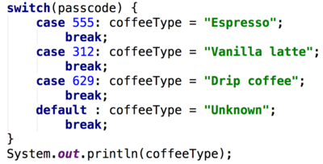

23. switch Statement
switch Statement
Switch Statement Components
Switch statement
A switch statement let’s you check the value of a certain variable (like our coffee maker passcode) and test it for equality against a list of possible values that it can take.
Each of these specific values is called a case and you can program different behavior for each case.
In Java this looks like this:

This code checks the value of passcode, which is some 3-digit integer value, and compares it to the specific case values: 555, 312, and 629.
Then if the variable equals a certain case value, the code after that case will be executed. For example, in the code above, if passcode is equal to 312 then the coffeeType String will be set to ”Vanilla latte”.
Break;
After this code is this word break; which will break out of the case code and go to the ending curly brace of the switch statement, where this code prints the value of coffeeType.
So the break ensures that only one case at a time will have it’s code executed.
If the break were not included, Java would continue reading code in the switch statement line by line and keep executing statements (like the default case code) until it reaches the end of the switch statement or hits another break!
Default case
The default case typically comes at the end of a switch statement and its code will execute whenever the other cases aren’t met. So, if the passcode was something like 914, this code doesn’t have a case for this particular value, and so it would fall into the default category and the coffeeType String would be set to “Unknown".